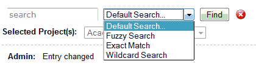
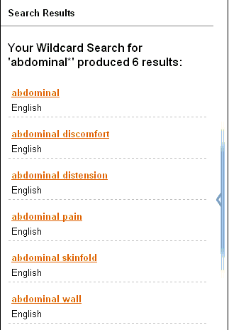

|
Search Function
|
Previous Top Next |
Both signed-on users and guest users can access the search function to search through the records. There are four search types available to signed-on users:
· Default Search searches for terms (in the source language) that start with the keyword(s) entered in the search box.
· Fuzzy Search uses a Levenshtein comparison to find terms that are similar to the keyword(s) entered.
· Exact Match searches only for terms that are identical to the keyword(s) entered.
· Wildcard Search uses special characters to aid in searching for terms:
· The ? character can be used to indicate one character. For example, the search string "?-dimensional" will find the following terms: "0-dimensional", "1-dimensional", "2-dimensional" and "3-dimensional".
· The * character can be used to indicate zero or more characters. For example the search string "abdominal*" will find the following terms: "abdominal", "abdominal discomfort", "abdominal distension", "abdominal pain", "abdominal skinfold" and "abdominal wall".
Guest users can use only the Default and Fuzzy Search types.
Clicking on the Search button (as shown in the picture above) opens the search panel. Here you can specify the keyword to search for, as well as the type of search.

Search Results
The Search Results will include all the terms found by the type of search selected and will be displayed in the Search Results Panel.
You can select any of the search results in the panel (by clicking on the orange term) and the Termbrowser will then open that record.
